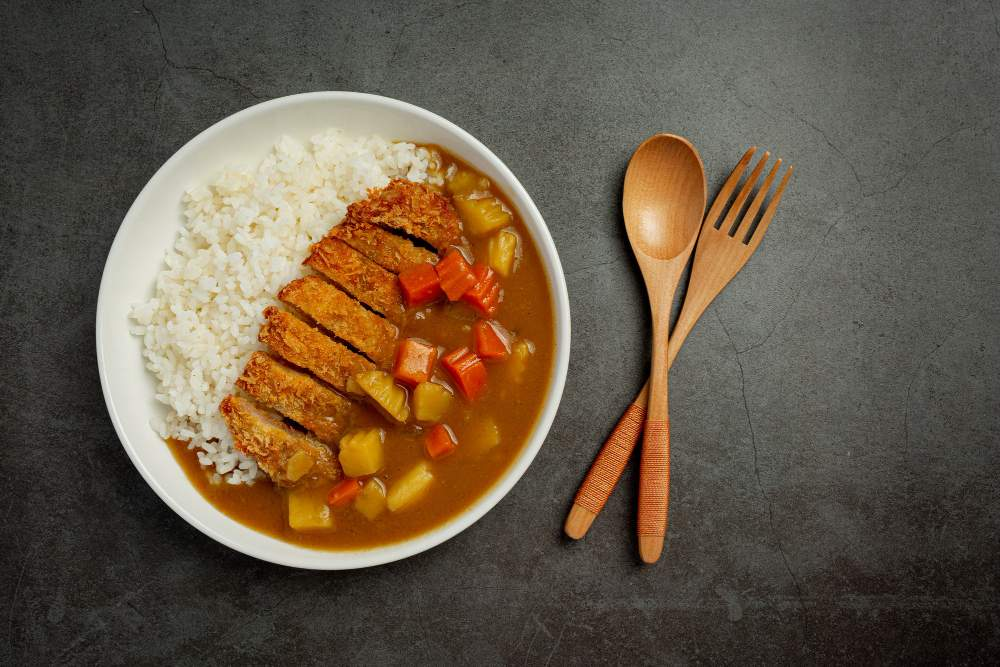

Recipes
Basic Japanese Curry Rice

Curry Udon
Ingredients
- 2 packs of udon noodles
- 1/2 onion, thinly sliced
- 1/2 carrot, thinly sliced
- 1/2 cup sliced mushrooms
- 1 cup dashi broth
- 1/2 cup Japanese curry (store-bought or homemade)
- 1 tbsp soy sauce
- 1 tbsp mirin
- 1 tbsp vegetable oil
- Green onions for garnish
Instructions
- Cook the udon noodles according to the package instructions. Drain and set aside.
- In a large pot, heat vegetable oil over medium heat. Sauté the onions, carrots, and mushrooms
until tender.
- Add dashi broth, Japanese curry, soy sauce, and mirin. Bring to a simmer and cook for about 5
minutes.
- Add the cooked udon noodles to the pot and stir to combine with the curry sauce. Cook for
another 2-3 minutes until everything is well heated.
- Serve the curry udon hot, garnished with chopped green onions.
Baked Curry
Ingredients:
- 2 cups cooked rice
- 1 cup Japanese curry (store-bought or homemade)
- 1/2 cup shredded cheese (mozzarella or cheddar)
- 1/4 cup panko breadcrumbs
- 1 tbsp butter
- 1 egg (optional)
- Chopped parsley for garnish
Instructions:
- Preheat your oven to 200°C (392°F).
- Spread the cooked rice evenly in a baking dish.
- Pour the Japanese curry over the rice, spreading it out evenly.
- Sprinkle the shredded cheese over the curry. Mix panko breadcrumbs with melted butter and
sprinkle over the cheese.
- Place the dish in the oven and bake for about 10-15 minutes or until the top is golden brown and
crispy.
- Optional: Crack an egg on top of the dish before baking for an extra layer of richness.
- Remove from the oven, garnish with chopped parsley, and serve hot.
Curry Croquette
Ingredients:
- 2 medium potatoes, peeled and boiled
- 1/2 cup Japanese curry (store-bought or homemade)
- 1/2 onion, finely chopped
- 1/2 carrot, finely chopped
- 1/2 cup ground beef or pork
- 1 egg
- 1/2 cup flour
- 1/2 cup panko breadcrumbs
- Salt and pepper to taste
- Oil for frying
Instructions:
- Sauté the onions, carrots, and ground meat until the meat is cooked through. Season with salt
and pepper.
- Mash the boiled potatoes in a large bowl.
- Add the cooked meat and vegetables to the mashed potatoes. Mix in the Japanese curry and combine
well.
- Form the mixture into small, oval-shaped patties.
- Dredge each patty in flour, dip into beaten egg, and then coat with panko breadcrumbs.
- Heat oil in a deep fryer or a large pot. Fry the croquettes until golden brown, about 3-4
minutes per side. Remove and drain on paper towels.
- Serve hot with your favorite dipping sauce or Japanese Worcestershire sauce (tonkatsu sauce).
Curry Bread
Ingredients:
- 2 cups bread flour
- 1 tsp yeast
- 1 tbsp sugar
- 1/2 tsp salt
- 2/3 cup warm milk
- 2 tbsp butter, softened
- 1 cup Japanese curry (thick and less watery)
- 1 egg, beaten
- 1/2 cup panko breadcrumbs
- Oil for frying
Instructions:
- In a large bowl, mix the bread flour, yeast, sugar, and salt. Add warm milk and knead until
smooth. Add softened butter and continue kneading until the dough is elastic. Cover and let it
rise until doubled in size (about 1 hour).
- Make sure the curry filling is thick. If it’s too watery, cook it down to reduce the liquid.
- Divide the dough into 8 equal pieces. Flatten each piece into a small circle and place a
spoonful of curry filling in the center. Pinch the edges to seal and shape into a ball.
- Dip each ball into beaten egg and then coat with panko breadcrumbs.
- Heat oil in a deep fryer or large pot. Fry the curry bread until golden brown on all sides,
about 3-4 minutes per side. Remove and drain on paper towels.
- Serve hot or warm. They can also be reheated in the oven.